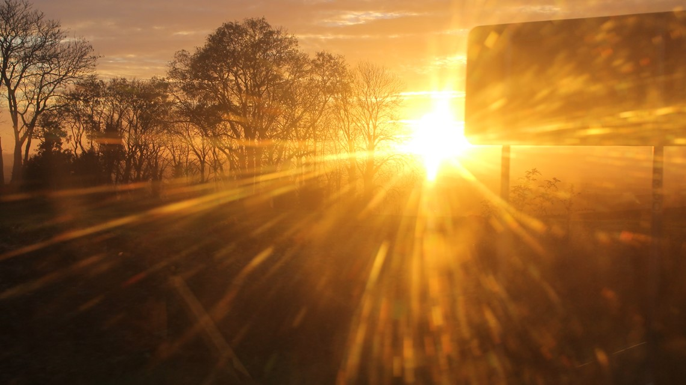

The Orange Vin
The Orange Vin is a super hero with a super ability of bending light from sun to create
glares. Glares are something that makes freezing time harder for The Capture, sometimes may be impossible to capture
- From Atlanta to Panama
- Head north on Capitol Ave SW toward M.L.K. Jr Dr SE
207 ft
- Turn left onto M.L.K. Jr Dr SE
436 ft
- Turn left onto Washington St SW
0.5 mi
- Continue onto Pulliam St SW
0.3 mi
- Take the ramp on the left onto I-75 S/I-85 S
2.5 mi
- Slight right onto US-98 W/15th St
Continue to follow US-98 W
Pass by NAPA Auto & Truck Parts - BPG (on the right)
6.0 mi
- Slight right to stay on US-98 W
Pass by Taco Bell (on the right in 0.2 mi)
0.4 mi
- Slight left onto FL-30 W/Front Beach Rd
2.6 mi
- Turn left onto S Thomas Dr
